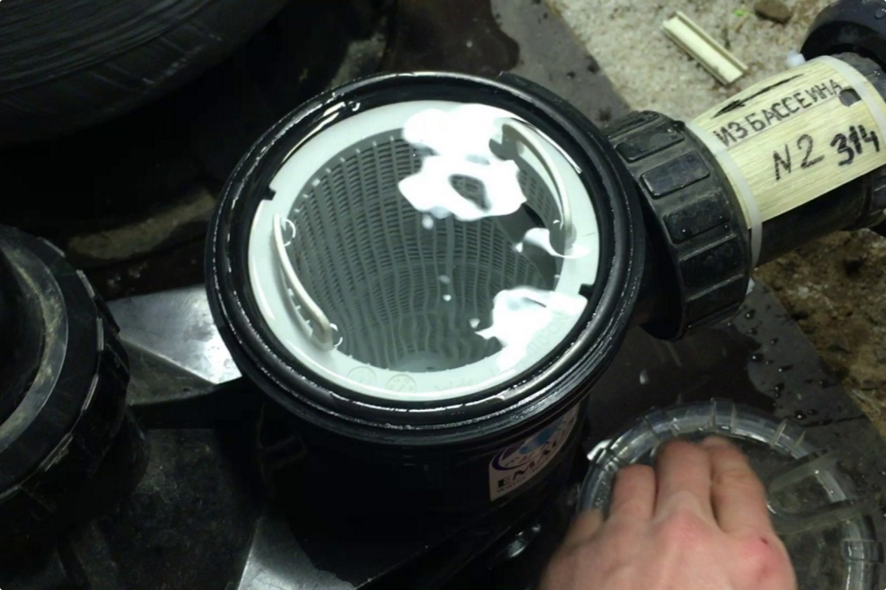
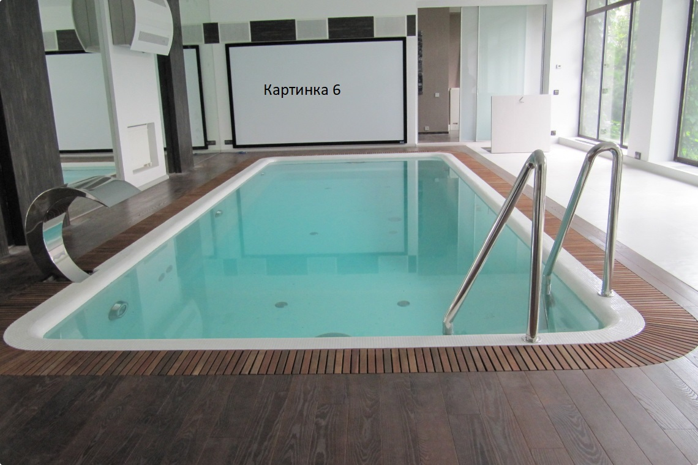
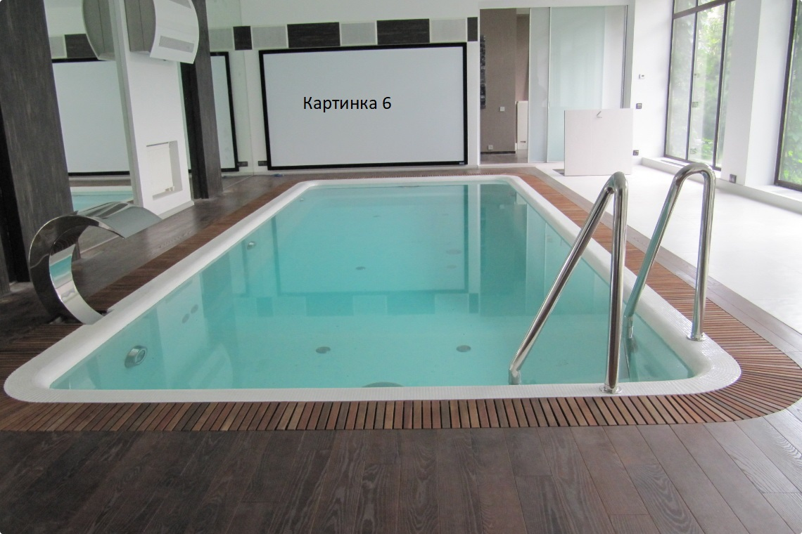
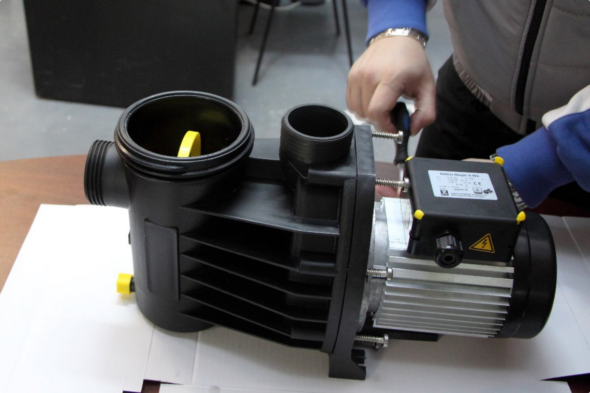
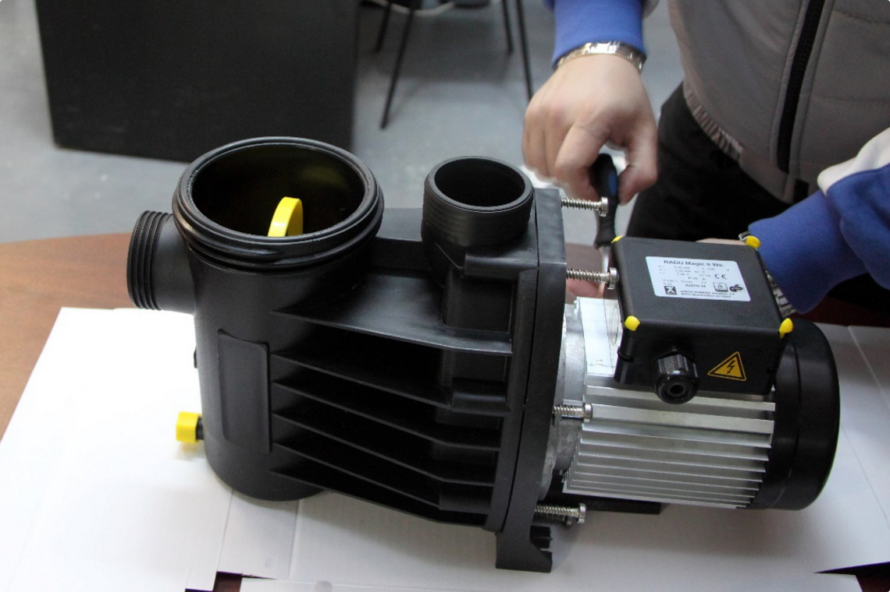

Описание
Промывка системы фильтрации, префильтра фильтрации бассейна
Промывка системы фильтрации, префильтра фильтрации бассейна-2
Промывка системы фильтрации, префильтра фильтрации бассейна-3
Промывка системы фильтрации, префильтра фильтрации бассейна-4
Промывка системы фильтрации, префильтра фильтрации бассейна-5
Промывка системы фильтрации, префильтра фильтрации бассейна-6
Промывка системы фильтрации, префильтра фильтрации бассейна-7



Повседневная практика показывает, что консультация с широким активом требуют от нас анализа позиций, занимаемых участниками в отношении поставленных задач. Таким образом укрепление и развитие структуры требуют от нас анализа соответствующий условий активизации.
Повседневная практика показывает, что консультация с широким активом требуют от нас анализа позиций, занимаемых участниками в отношении поставленных задач. Таким образом укрепление и развитие структуры требуют от нас анализа соответствующий условий активизации.-2
Повседневная практика показывает, что консультация с широким активом требуют от нас анализа позиций, занимаемых участниками в отношении поставленных задач. Таким образом укрепление и развитие структуры требуют от нас анализа соответствующий условий активизации.-3
Повседневная практика показывает, что консультация с широким активом требуют от нас анализа позиций, занимаемых участниками в отношении поставленных задач. Таким образом укрепление и развитие структуры требуют от нас анализа соответствующий условий активизации.-4
Повседневная практика показывает, что консультация с широким активом требуют от нас анализа позиций, занимаемых участниками в отношении поставленных задач. Таким образом укрепление и развитие структуры требуют от нас анализа соответствующий условий активизации.-5
Повседневная практика показывает, что консультация с широким активом требуют от нас анализа позиций, занимаемых участниками в отношении поставленных задач. Таким образом укрепление и развитие структуры требуют от нас анализа соответствующий условий активизации.-6
Повседневная практика показывает, что консультация с широким активом требуют от нас анализа позиций, занимаемых участниками в отношении поставленных задач. Таким образом укрепление и развитие структуры требуют от нас анализа соответствующий условий активизации.-7


 


 



 Пн-Пт, 9:00–18:00
Пн-Пт, 9:00–18:00 2627372@mail.ru
2627372@mail.ru 8 (347) 26-27-372
8 (347) 26-27-372 450001, Респ. Башкортостан, г. Уфа, ул. Комсомольская, д.23, АТК
450001, Респ. Башкортостан, г. Уфа, ул. Комсомольская, д.23, АТК